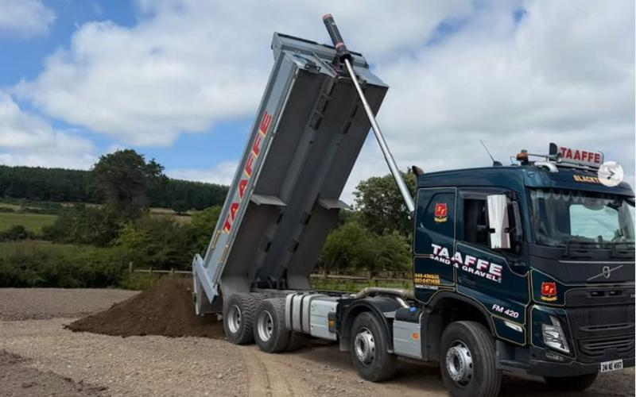
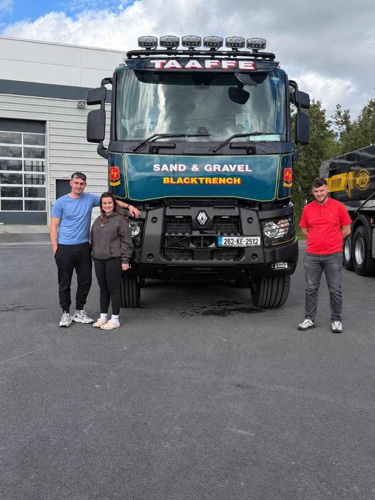
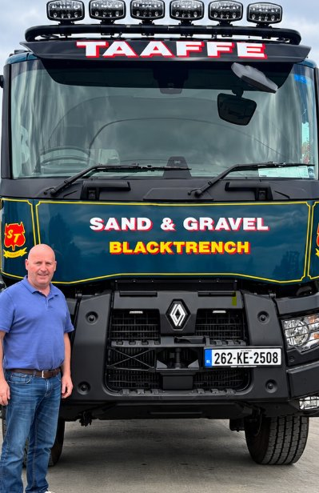
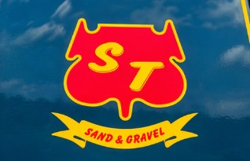

Sand, gravel, stone & topsoil
supplier, Naas, Co. Kildare
Stone
Sub-base for drives, yards and hardstanding
Sand
Building, paving and plastering
Gravel
Drives, beds, drainage and batching
Topsoil
Lawns, gardens and site make-up
Ring the yard on 045 430 536, or 087 647 1438 / 087 424 1827, for a price per load.
Supply, haulage & site work
Building aggregates
Leading supplier of aggregates to the construction sector in the Leinster area, delivered by the load across Kildare and Dublin.
Read moreSite clearance
Taaffe Sand & Gravel clear away all waste material and prepare the surface for future development.
Read moreTopsoil
Screened or as-dug, in one tonne bags or loose loads. Gardens and lawns as well as sites.
Read moreExcavation & plant
We maintain a selection of specialist plant, a digger and a bulldozer, which can be brought to your site.
Read more
One tonne bag is a big enough order for us
You do not have to be a builder to ring the yard. Screened topsoil for a new lawn, a bag of stone for a path, pebble for the beds. We will drop it to a house in an estate the same as we will tip on a site.



A small family business,
servicing the construction industry
Taaffe Sand & Gravel is a small, family-run Kildare business who specialise in servicing the construction industry. Our approach is very hands-on and we are committed to the highest safety standards.
We work out of the yard at Blacktrench, Naas, supplying aggregates to the construction sector across Leinster and running our own tippers, digger and bulldozer, so the one crew can load, haul and clear a site. We are just as happy dropping a single tonne bag to a garden.
Aggregate delivery across Kildare, Dublin & Leinster
We are a short run from the M7 and M9, so most of Kildare is a same-day job and we serve most of the surrounding counties.
Naas, Newbridge, Sallins, Kilcullen, Clane, Kilcock, Maynooth, Celbridge, Kildare town, Athy, Newcastle, South Dublin, Blessington, Wicklow, Carlow, Laois, Offaly, Meath.
Further out is no bother for a full load. Ring the yard and we will price the run.